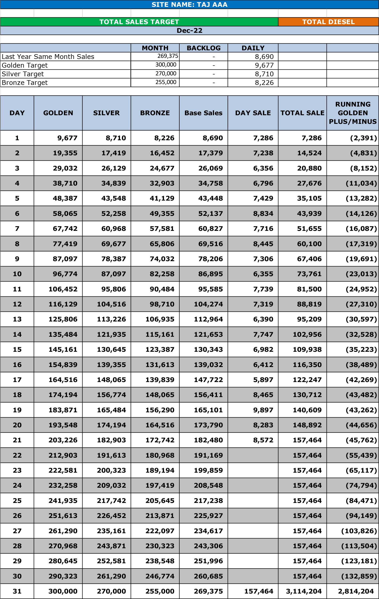
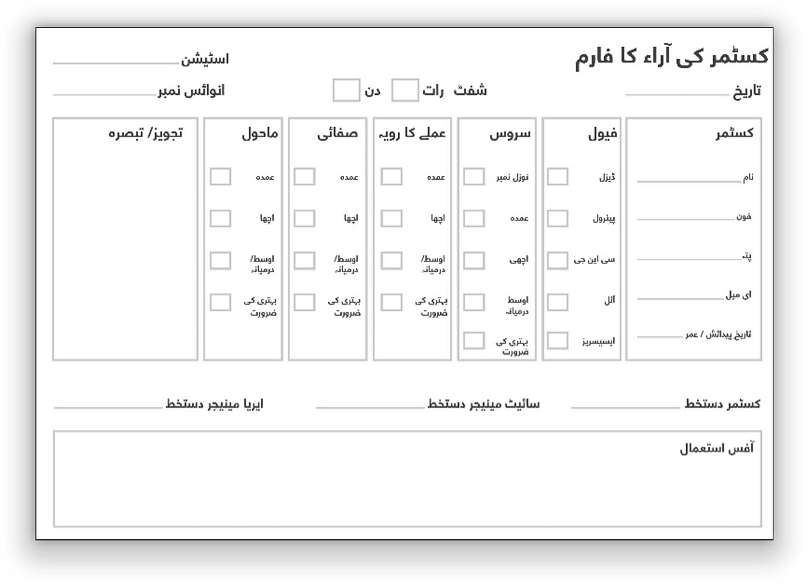

FINANCIAL KPIs
RETAIL FUELS:
Sales through different products and services is how station generates its revenue to bear expenses and gain profitability. Revenue being topline, importance of sales should be on top of the list of daily effort.
Sales targets are set with analysis of past results, growth objectives, business trends, competitive strength, and projections. These are communicated every month by Area Manager and categorized as:
GOLDEN 10% Growth over Same Month Last Year or 60,000 litres (whichever is higher)
SILVER 6% Growth over Same Month Last Year or 40,000 litres (whichever is higher)
BRONZE 3% Growth over Same Month Last Year or 20,000 litres (whichever is higher)
AVERAGE Same Volume as Same Month Last Year
BELOW <-Same Month Last year
TOTAL DIESEL & DIESEL CASH:
Diesel is the primary product at Highway Stations. It is a common practice across the industry to offer credit to reliable fleet customers, however, this has a significant financial impact on working capital and is prone to fluctuations. Cash Diesel Sales are driven by loyal customers built through extensive Customer Relationship activities and hence are more important to monitor.
It is hence recommended that Total Diesel and Diesel Cash Sales & Targets are set & monitored separately.
PETROL:
Petrol sales targets must be separately monitored.
CNG:
In case of CNG, CNG targets must also be set separately and monitored through target sheets.
LUBRICANT:
Separate tracking should be done for Lubricants
TARGET MONITORING TOOL:
Target monitoring tool is devised to enable clear view of sales enabling daily discussions on target and delta.
- Target monitoring tool should be updated every day at the start of business
- Target Monitoring tool should be placed on notice board.

UNDERGROUND TANK (UGT) GAIN & LOSs:
Product gain is a significant part of Retail Station’s profitability.
For a site situation on highway with high diesel sales, ~22% of Retail Station’s annual profitability should come from product gain in underground tanks. For city sites with high Gasoline sales, ~10% of annual profitability should come from product gain. This is while retaining measurements completely accurate.
As an high impact operational KPI, this must be monitored on daily basis to ensure this segment of site
profitability is safeguarded while ensuring that we remain focused on our core values of Trust.
Further details on Tank Gain & Loss management can be found in Stock Management section of the Manual.
BEST PRACTICES FOR MONITORING GAIN LOSS:
1- Always depute a reliable and trust worthy team member to conduct shift closing and tank lorry
decantation.
2- Follow all guidelines with respect to tank lorry decantation leveraging tools already provided such
as dip book and TL Decantation Book.
3- Conduct daily tank wise stock reconciliations and review for anomalies (format follows)
4- Conduct spot checks and mid day closing on random days throughout the month
5- Conduct monthly stock reconciliation yourself to see overall stock movement in the month
6- Ensure all dip measurement equipment including dip rod are in proper condition.
Ensure measurement is always accurate through customer measurement checks throughout the day. This helps build customer confidence as well as ensures oversight.
Following is the target gain / loss across the year based on our experience and average data of over 25 Retail Stations.
DAILY UGT GAIN / LOSS MONITORING FORM:
Daily UGT Gain / Loss Monitoring Form must be completed and sent with DBR on daily basis

UTILITIES:
Electricity & Genset consumption form a significant portion of Retail Station expenses and have a significant impact on profitability. Monitoring these on daily basis is important to maintain strict control over excessive
utility consumption.
With rising costs, it is recommended that Solar is installed on Retail Station.
ELETCRICITY:
Over the last few years electricity prices have more than doubled, making it more important to monitor Electricity Consumption on Daily Basis
How to monitor KPI:
1- Maintain monthly units consumption on the format mentioned below
2- Set monthly & daily electricity units targets for the team based on historical consumption and
targeted reduction
3- Monitor consumption on daily basis and intervene in cases of high consumption to
understand root cause
4- Invest in low electricity consuming electrical equipment such as LED lights
GENERATOR USAGE & CONSUMPTION:
Generator usage and consumption should be monitored on daily basis in order to ensure:
- Check is maintained on Genset usage
- Timely maintenance, oil change, etc is planned
- Changes in consumption patterns can be highlighted
- Potential fraud / theft can be detected on timely basis
Daily Generator Report is the tool which is to be used for daily monitoring.
DAILY GENERATOR REPORT:
CUSTOMER SERVICE KPIs:
One time sales can be generated without good customer service but customer comes back second time only because of good service. Customer service, complemented by customer relationship activities, is key to customer retention and loyalty. Customer service and relationship combine to create a force that makes a station grow manifolds in sales, profitability and market share.
CUSTOMER SERVICE GRADE:
Forecourt is central to customer service and each service attendant at forecourt is trained for delivering customer service points to each customer. Service should be monitored, recorded and assessed on regular basis. Like monthly sales target achievement, service grades and incentives are assigned on monthly basis to each station.
Physical monitoring of service delivery at forecourt at random hours of each shift and CCTV monitoring of service delivery are two key methods for assurance of top class services. It is one of the most important tasks of retailer and manager to have best customer services delivered to all customers round-the-clock.
Service grades should be monitored against all the Basic Service Steps defined in the Chapter on Customer Service & Relationship. Based on the total score, service rank is assigned as follows:
GOLDEN >89.5%
SILVER 84.5% to 89.5%
BRONZE 79.5% - 84.5%
BELOW 0% to 70.53%
SAMPLE SERVICE MONITORING FORM:
CUSTOMER RELATIONSHIP KPIs:
Like customer service, customer relationship is equally important. Business activities that are
performed for building and strengthening customer relationship result in winning hearts & minds and loyalty of customers.
CUSTOMER PRODUCT MEASUREMENT:
Customers are always concerned about the quality and quantity of retail fuel products, especially quantity. Offering customers to check product measurement at forecourt of station builds confidence of customers, which makes a station become customers’ preferable choice for refueling. Retailer has to ensure that customer product measurement activity is performed in each shift.
Retailer / Area Manager must spot check by calling customers in the Measurement Check report.
PHONE CALL TO INACTIVE CUSTOMERS:
Repetitive or loyal customers who become inactive are contacted through phone call. Detailed guidance including the script on this section are given in the Customer Relationship Section
All calls and their results must be recorded in Customer Phone Call Report .
Retailer / Area Manager must spot check by calling customers in the Customer Phone Call report.
CUSTOMER FEEDBACK AND COMPLAINTS:
Customer feedback and complaints come from a customer who is concerned for improvement of company. Such customers should be handled with respect and should be thanked for their concern.

CUSTOMER PICTURES:
This is a feel good activity that is performed with truck drivers being photographed with their trucks. Photographed are printed and placed at a board at forecourt. Customers can take their picture when come back to station.
OPERATIONAL KPIs:
Some operational KPI’s help achieving sales, service and relationship KPI’s of station.
PRODUCT DISPENSER MEASUREMENT:
Customer measurement check becomes successful only when product measurement setting on dispenser is accurate. It is critical for Site Manager and Retailer to have such checks on regular basis in order to assure accurate quantity for customers.
All results are recorded Dispenser Measurement Check Report in KPI Book.
Frequency: All nozzles must be checked once every two weeks
CCTV RECORDING CHECK:
NIGHT TIME STATION CHECK (SURPRISE VISIT):
Working in night shift requires a lot of commitment. Customers who come in late night to station are those who are in dire need of fuel. If staff is not available or staff does not provide complete service, such customers may not have right impression of the Retail Station. Therefore, it important to check how customer service is going late in night shift..
All results are recorded in Night Shift Personal Visit Check Report in KPI Book.
Frequency: Twice a Week
WEEKLY HOUSEKEEPING:
Foundational requirement of superior customer experience is a clean, well lit Retail Station. In order to do so Weekly Deep Cleaning should be done:
FREQUENCY:
- At CNG Sites, there will general cleaning day on load shedding day.
- At Other Sites, general cleaning day will be done on every Sunday.
SCOPE:
- All areas of the Site from floor to rooftop will be checked for cleaning and setting.
- Dust and Dirt should be removed from windows, doors, walls, machines, furniture, fixtures,
cupboards, cabins, ceilings, forecourt, vehicles and all other objects.
- Staff uniforms should be neat and clean.
- Floors and machines should be cleaned of oil spills and other liquids and material.
- Customer toilets should be clean and all system of toilet should be functional.
- Light fixtures should be cleaned to increase light efficiency.
- Tools and equipments should be stored at specific location in orderly arrangement.
- Maintenance of building and equipment should be done as need in order to keep building,
equipment and machinery in safe and efficient working order.
- Waste should be collected, stored and disposed off on regular basis.
- Saleable scrap should be stored in proper and separate manner and its nature and quantity should
be recorded.
- Store should be maintained properly. All products should be recorded and kept in proper stacking
and position.
- Garden should be well maintained and beautiful.
- Drainage system should be clean and safe.
- First aid measures should be proper.
- Fire fight tool and area should be in good condition.